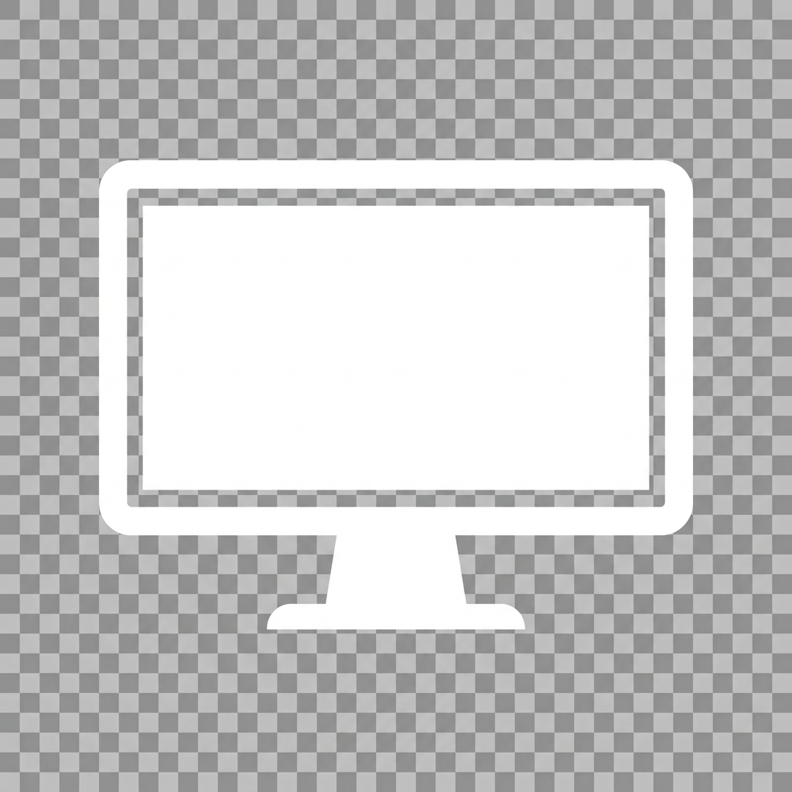

Enfoque de Pantalla
Control de brillo y apagado de monitores
Inactivo
Monitores Detectados
🔄
Cargando pantallas...
Modo de Apagado
Híbrido (Recomendado)
Solo DDC/CI (Hardware)
Solo Superposición (Software)
Nivel de atenuación
100%
Atajo de teclado global
Borrar
Idioma / Language
System Default (Automático)
Español
English
Hacer clic a través de pantallas atenuadas (Click-through)
Iniciar con Windows